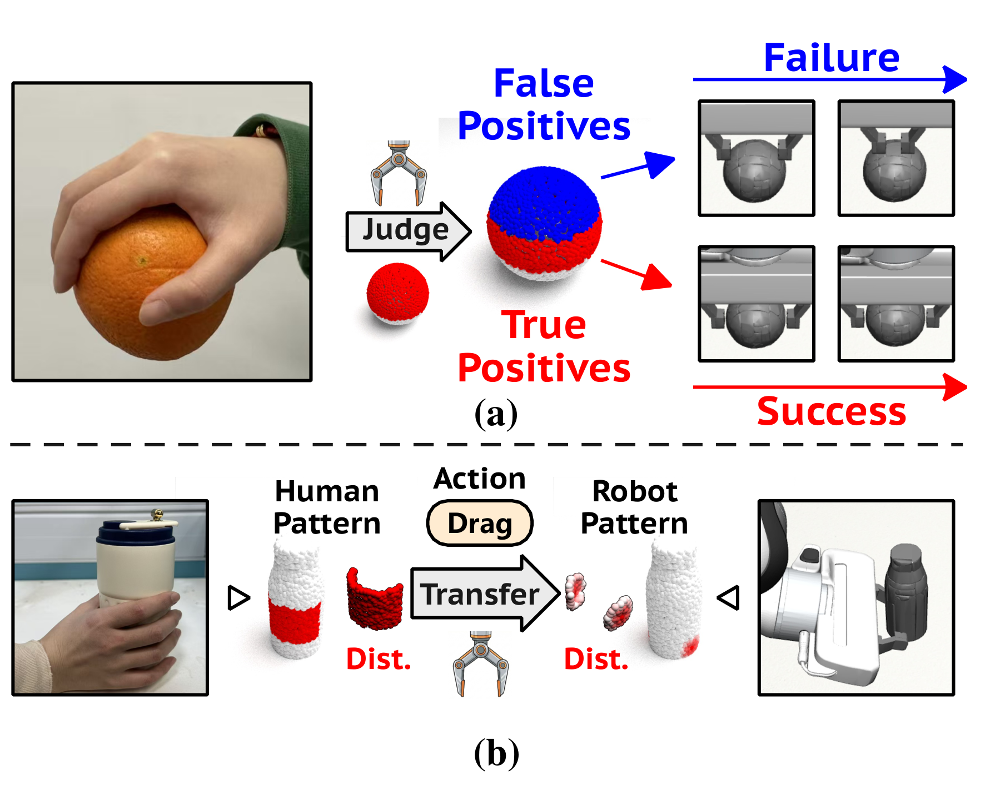
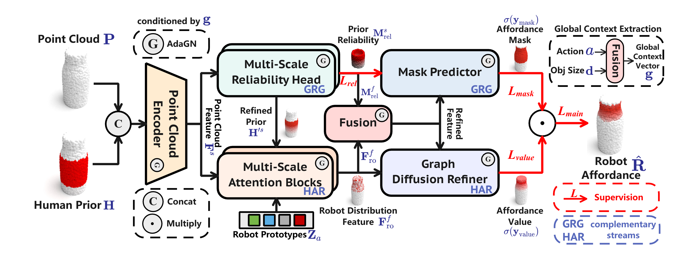
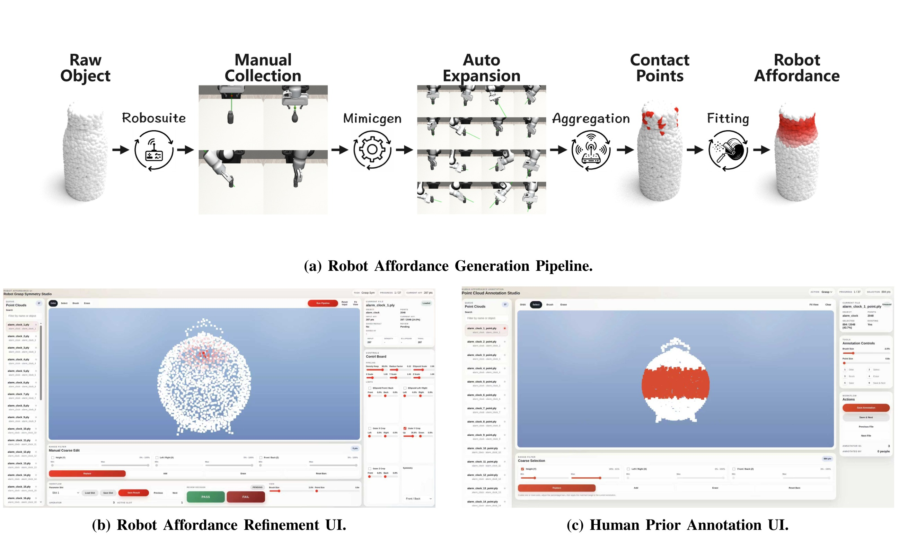
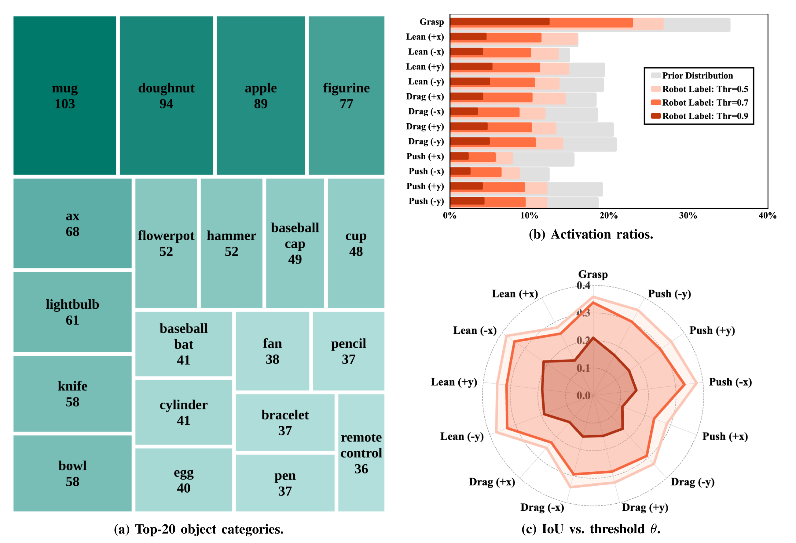
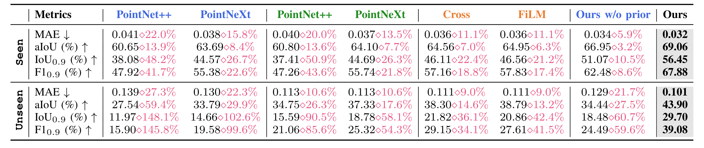
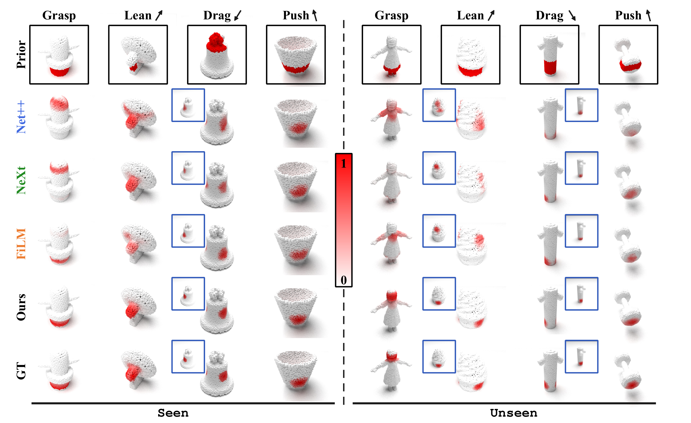
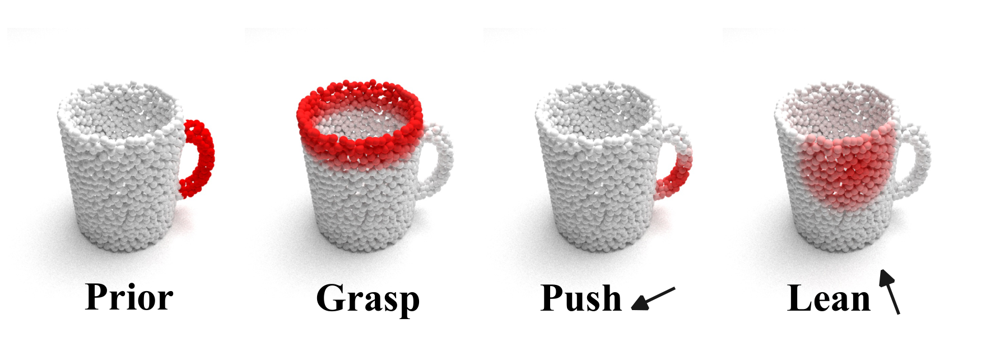
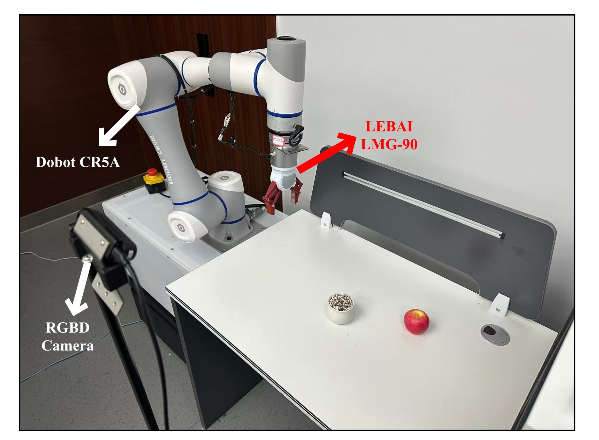
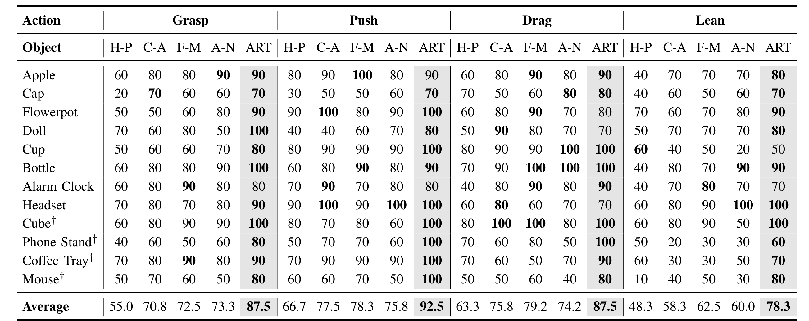
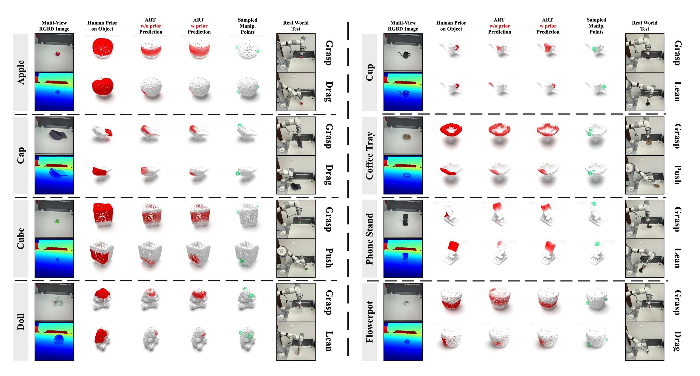

3D affordance acts as a critical link between perception and action, providing priors for robotic manipulation. While existing approaches predominantly leverage human priors as direct references, they often overlook that affordance is not an object-intrinsic property but is inherently coupled with the agent's embodiment. Due to the structural and morphological disparities between human hands and robot end-effectors, directly applying human priors causes severe incompatibility for robotic execution. Motivated by this, we introduce a novel task setting, 3D Human-to-Robot Affordance Transfer, which addresses the affordance misalignment arising from distinct embodiment structures. To support this task, we construct the Human-Robot Paired Affordance Dataset (HPAD), the first large-scale 3D affordance benchmark in which every object is annotated with both human-prior and simulation-validated robot labels. HPAD covers 2,137 objects across 80 categories and 13 atomic action primitives, yielding over 27,000 object–action pairs. On top of HPAD, we propose the 3D Affordance tRansfer neTwork (ART). ART first filters geometric false positives in the human prior via a reliability gating stream, then reconstructs the prior into a robot-actionable distribution through hierarchical reconstruction and a graph-diffusion refinement that resolves the topological mismatch between human and robot affordances. Experiments on HPAD demonstrate the reliability of the proposed task and the superiority of ART. We further validate ART on a 6-DoF arm with a parallel-jaw gripper in a 2,400-execution benchmark across 12 objects and 4 action categories; ART attains the best success rate (86.5% over its 480 trials), confirming the practicality of the transfer paradigm.
A human hand and a parallel-jaw gripper contact the same object differently. Regions that are natural for a hand can be geometrically infeasible for a gripper, and the region a gripper needs often has a different shape from the one a person would touch. A human prior therefore cannot be handed to a robot as it is.

Motivation. (a) False positives in the human prior are suppressed by leveraging gripper constraints and object geometry. (b) Conditioned on the action and the gripper morphology, the human prior distribution is transformed into a robot-structured pattern.

Overview of ART. ART encodes the input point cloud and the human prior into features modulated by global context (action and object size). The features are processed by two complementary streams: GRG (Geometric Reliability Gating) estimates the reliability of the human prior to suppress geometrically invalid regions, while HAR (Hierarchical Affordance Reconstruction) reconstructs the prior into a robot-structured affordance representation. A final decoder fuses the two streams and predicts the robot affordance map.
HPAD is a 3D affordance benchmark in which every object carries two labels for each action: a human prior, painted by annotators as a per-point mask, and a robot affordance, obtained from manipulation trials validated in simulation.

HPAD construction. (a) Robot Affordance Generation Pipeline: an automated workflow that produces robot affordance labels from object point clouds. (b) Robot Affordance Refinement UI: an interactive tool used to refine the labels flagged by the quality checks. (c) Human Prior Annotation UI: a custom interface used to paint per-point human priors on the same object point clouds.

HPAD statistics and the embodiment gap. (a) Top-20 object categories by frequency. (b) Activation ratio of the binary human prior versus thresholded robot labels. (c) IoU between the two activations as a function of the threshold: the human prior and the robot label overlap only partly.

Comparison results on HPAD. Blue: methods that do not use the human prior (Robot-Only). Green: Input Concatenation, where the per-point human prior map is appended as an input channel. Orange: Feature Fusion baselines that inject the prior at the latent level (Cross-Attention / FiLM) on the PointNeXt backbone. ◇ denotes the relative improvement of our method; bold marks the best result. “Ours w/o prior” is ART trained and evaluated with the human prior set to zero.

Visualization results. Rows show the human prior (Prior), the predictions of Net++, NeXt, FiLM and Ours, and the ground truth (GT). The left four columns come from the Seen partition and the right four from the Unseen partition. Arrows indicate the action direction, and red intensity encodes the per-point affordance. Inset boxes show the back-side view of the same object.

Action-conditioned transfer. The same human prior is transferred to different robot affordances for different actions.
ART is evaluated on a 6-DoF arm with a parallel-jaw gripper: 12 objects, 4 action categories (Grasp, Push, Drag, Lean), five methods and 10 physical trials per (object, action, method) configuration, 2,400 executions in total. Object point clouds are reconstructed from real multi-view RGB-D observations.

Real-world evaluation setup. A 6-DoF robot arm equipped with a parallel-jaw gripper and an RGB-D camera.

Real-world manipulation success rates (%). H-P: human prior used directly; C-A: Cross-Attention; F-M: FiLM; A-N: ART w/o prior. Bold marks the best method per (object, action), gray shading highlights ART, and † denotes objects not present in HPAD.

Real-world execution pipeline. Each row shows one (object, action) example. From left to right: the RGB-D input, the human prior on the object, the affordance predicted by ART w/o prior, the transferred affordance produced by ART, the manipulation points sampled from the ART map, and the corresponding real-world execution. Red regions indicate affordance maps, and green points are sampled contact points.
@article{zhang2026art,
title = {ART: Bridging the Embodiment Gap in 3D Human-to-Robot Affordance Transfer},
author = {Zhang, Zichen and Zhai, Wei and Zhang, Xuji and Cao, Yang and Kang, Yu},
journal = {arXiv preprint},
year = {2026}
}